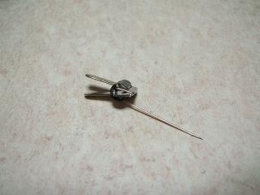
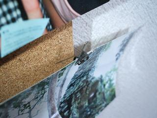

日々、想ふ
〜過去感じたことがつれづれと〜
（できるだけ最大化してお読みください）
日々、想ふ
休みのバイトの日だから。９/３０
寝て起きてバイト行ったら一日終わった、タケユキです。
今日は阪神が優勝した翌日、つまり優勝セールの日。
別に阪神百貨店に用事はなかったので
バイト前にヨドバシ梅田に寄ってみました。
にぎやかなのはにぎやかだけどいつもと同じ。
あれ？もうちょっと盛り上がってると思ってたけど。
今日の日記の短さ：だって書くことねーし。
ヘタレと呼ぶがいい。９/２９
今日は真面目に更新しようと思ったけどここの話も
焼酎飲んだらどうでもよくなったので学校始まってから
真面目に更新しない、タケユキです。書いてくつもりです。
学校始まったら真面目に更新します。
今日の出来事：阪神優勝。
さて。９/２８
俺はいったい何がしたいんだろうか、タケユキです。
ちょっと悩んでます、午前３時。
楽しい一日。９/２７
雨ですね、タケユキです。
今日は久々に映画を見に行った。「容疑者・室井慎次」。
ちょっと寝てたってのはおいといて、楽しい時間。
それから東通りのとりひめで晩ご飯＆飲み、楽しい時間。
毎日こんなだったらいいのに。
今日の感想：つかの間だと分かっているからこうも楽しいものなのか。
野菜食えっつう話。９/２６
うっしゃあ今日からから三日ほど楽しい日々です、
といってもただバイトがない日なだけですけど、タケユキです。
てなわけで今日は生ハムと中華ドレッシングを買うためだけに
外出したっきり家で生ハム食っちゃ寝生ハム食っちゃ寝してました。
それにしても俺はたこわさびやら生ハムやらつまみ系が大好きだな。
しかも塩分多そうなのばっかり。
もうすぐ糖尿病になりそうな気がするのはたぶん気のせいじゃない。
今日の晩ご飯：生ハムとカレー。
進行の予定が狂うやろが。９/２５
盗んだ車で３０キロばかし運転した小学生が捕まったみたいですね(
こちら参照)。
車盗んだ理由が「家出するのに
自転車ではしんどいと思った」だそうです。
チャリで京都から北海道まで行く男もいるってことをこいつには
知らしめてやりたいと思うのは俺だけですかね、タケユキです。
何度か説明したことがある気もするけど
俺が行ってるバイト先のレストランは土日は結婚式の二次会をやってます。
会によって進行は違うんだけど大まかな流れとしては
オープニング(入場) → フリータイム → ビンゴとかのゲーム
→ フリータイム(カラオケとか出し物やったり) → エンディング(退場)
こんな感じで流れていきます。
フリータイムはゲームの前後２回とってあるんだけど
二回目のフリータイムはゲームとエンディングまでの
時間調整のようなものだったりします、
ゲームに時間かかったからフリータイム短めでいこう、みたいな感じで。
今日やった二次会では２回目のフリータイムでギター演奏をやるって話で。
こういう場でのカラオケなり演奏ってのはたいていが一組一曲だけ、
ていうか一曲が一般的、主役は新郎新婦なんだし。
だから直前の打ち合わせの時でも何曲やりますかとか聞くことはありません。
今日はお客の中に軽音部出身の人がいて、その人が演奏するらしく
店員の自分としても多少は楽しみだったけど、
いざ始まってボーカル役の前説を聞いてみると、
「今日は本当におめでとうございます・・
・・・それでは
一曲目、聴いてください、○×。。。。
」
おい一曲目って、何曲やる気やの。
今日の演奏：結局３曲やっていきやがった。
寝て起きて働いて。９/２４
バイト先の人をその人の最寄りの駅まで送って
その帰り道、迷った、タケユキです。
大阪市内は一方通行が多くて行きの道をそのまま逆走したら
帰路につけるってわけじゃないのが問題ですよね。
１０分ほど迷ったあげく知ってる道に出て事なきを得ましたが。
今日の日記：今日ってか最近ぐだってるなー。
眠い。９/２３
昨日は夜更かしして騒いでました。
それにしても友達に女装の趣味があるとは思いませんでした、タケユキです。
今日は起きたら１４時。
もう一日半分終わっとるやんけ。
バイト行って働いて、
帰ってきてからマンガ読みながら更新中。
なぜかいまさらHUNTER×HUNTER読んでます。
今週はもうバイトしか予定がないから書くことに困る。
友達の女装の趣味について書けたらいいけど
口止めされてるからかけないのがつらい。
別に女装くらい俺は止めないのに。
あ、うん今日はこれくらい。
今日のバイト：５時間きっかり。
今日の出来事。９/２２
友達と外で飲み、帰りにコンビニでアイス(
ハーゲンダッツ)を買って家に行き、
食べることなくそのまま就寝、
結局のことを忘れたままその友達の家を後にしたわけですが、
知ってますか？アイス(ハーゲンダッツに限ったことではない)には
賞味期限というものが明確に規定されていません。
「日本アイスクリーム協会」によるとその理由は、
・通常ー20度以下で保存されるため細菌が減ることはあっても増えることはない。
・原料が単純で安定的であり、長期間の科学的な品質低下はわずかである。
・アイスクリーム類は一度溶けると状態が変化して元に戻らない。
すなわち、外観がきちんとしていれば正常。
ということだそうです。
要するに食える状態ならアイスクリームは大丈夫っていう話。
それなら今度行った時に食べればいいやと思うのが道理ですよね、
だってアイス(
ハーゲンダッツ)なんですから。
賞味期限が明日切れる玉子とかだったら仕方ないなと思いますが
賞味期限が半永久のアイス(
ハーゲンダッツ)、
ましてや友達のアイス(
ハーゲンダッツ)を手にかけようとするやつは
人間じゃないですよね。
って
うのきーーーーー！！！
夜に語った内容を事細かに書いたメールを
俺のケータイのメモリに入ってる高校の友達全員宛に
送ろかと思うほどの怒りだと言えば俺の怒りは伝わるだろうか、タケユキです。
アメリカに留学に行ってた
Ashが帰ってきました。
会ってなくてもブログとかで何してるとかってのは知ってたから
思ったほどの久しぶり感はなかったんだけど
電話で喋った時に最初に言われた言葉、
「お前の日本語、聞き取りずらいな」
あの、殴ってもいいですかね？
今日の日記：内輪ネタが多いな、しかし。
国破れて山河ありとかそういうやつ。９/１７
安 我
ン 、
ソ゛ 帰
滞 二 ル
二サ゛ 故
ラ 郷
ン 一 ニ
ヤ 。
更
新
一
。
今日のいつもの冒頭はここに：反語使ってますよ、タケユキでした。
WANTED。９/１６
あーそうそううのきよ、二十日飲む前にアメ村でちょっと買い物したいけん
暇だったら夜からじゃなくて午後から付き合ってくれ、
私信から始まるダイアリー、
最近メールじゃなくてウェブ上でやりとりすることの方が
ほんと多くなりました、タケユキです。
今から約２年くらい前のこと(たぶん)、
撮った写真をコルクボードに貼ろうと思ってロフトでピンを買いました。
こんなやつ。

パッと見ちょっと分かりにくいかもしれないんだけど
このピンはいわゆる押しピンとは違って
ピン(針)の部分とクリップになってる部分の２つでできている
ちょっと変わったタイプのピンです。
このクリップの部分で写真を挟んで
ピンの部分でコルクボードに刺して使ったら
写真に穴を開けることなく飾れる便利なピンだったりします。
使ってみるとこんな感じ
そろそろストックなくなりつつあるし買っとこーかと
前にロフトに行ったらなぜかもう見当たらない。
普通の押しピンならあるのに。
てなわけで今日は東急ハンズに行ったついでに探してみた。
けどやっぱり見当たらない。
夏に撮った写真現像して飾りたいのに
このままだと写真に穴開けて飾らないといけなくなる。
思い出に穴を開けたくはないのですよ。
↑うまいことかどうかは知らんがかっこいいこと言った。
というわけでこのピン見かけた人教えて。
まぁこの夏は心に穴が開いてますからすぐじゃなくてもいいですけど。
今日のパンク修理：原因不明。